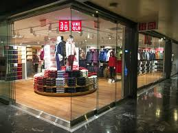
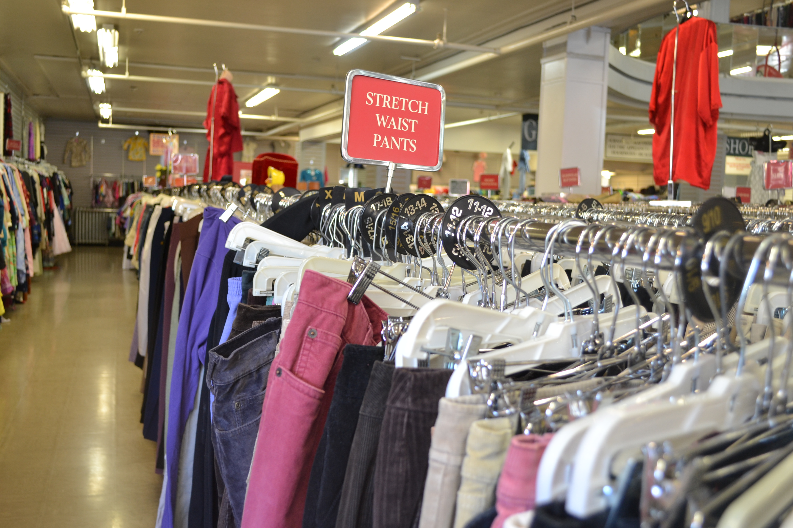

WHERE TO SHOP: AFFORDABLE
DD's Discount is all about having amazing deals. They provide trendy styles for everyone, both kids and adults. Luckily they are located almost everywhere making the hottest fashion always acessible. What is special about DD's is although it is a corprate store, they love giving back to the community. Every year they hold donation drives and always give back to local Boys and Girls Clubs. It is important to shop where they actually care for th ecommunity.
Ross is a chain of department stores that sells off-price items such ass clothes. You can pretty much find any style at Ross for a great price. There are hundreds of styles so the biggest piece of advice that can be taken when shopping at Ross is look everywhere. Treasures can be found for cheap if you take the time to look through the racks! Ross is one of the largest off priced department stores in America and actually owns DD's. LIke DD's, Ross cares not only for their customers but the community.
H&M is a retail company that caters for men, women, and children. H&M is right in the
middle of being super affordable and highend, but we think it is more affordable than anything.
Whenever you step into H&M there is almost always some type of deal making it easy for anyone
to shop there. H&M is known for always having the newest trends and even starting trends. Wanna
dress like your favorite youtuber? H&M has it! What makes H&M unique is that they accept your used clothes
to make new styles out of recycled material.
 Uniqlo
Uniqlo is a Japanese casual wear designer, manufacturer and retailer. Though not as affordable as
other options listed above there are still great deals you can find. Uniqlo's price is decent when
looking at the actual quality of the clothes. Everyone wants to have the best style but usually
consider how the clothes will literally make them feel. In Uniqlo all there clothes are super soft!
Who knew being fashionable could be so comfortable.
THRIFTING
Why to consider thrifting:
Re-wearing clothes reduces waste and pollution. Second-hand clothes are less
likely to end up in landfills. Thrift stores make it easier to know where your money is going.
A thrift store is different from a consignment or resale shop. It is run by a not-for-profit group
instead of a merchant. The purpose of a thrift shop typically is to raise money for charities
via the not-for-profit group. Another great thing about thrifting is that you can find a unique
piece like nothing before. Going for a vintage style, try thrifting.
Thrifting Tips: Have an open mind! Buying used clothes can seem a little scary
but with a positive mindset you can find a really great piece. When thrifting it is always good to
look beyond your own style.
Good local thrift shops
 Out of the Closet
Out of the Closet is a nonprofit chain of thrift stores whose revenues provide medical care
for patients with HIV/AIDS. There are several locations in the bay area, two of which being
in Oakland and San Francisco.

Anastasia's New and Vintage Clothing
Anastasia's New and Vintage Clothing is located in Berkeley an dsells both new and used clothing.
Anyone can come in and sell there clothes there or even trade in their used clothes for some new
exclusive clothing from Anastasia's. Located in the heart of Berkeley, you are certain to find
something unique and fun.
Pick of the Litter Thrift Store
You find everything you need at Pick of the Litter, even some cool pieces to spice up your outfit.
Pick of the Litter is located in Burlingame. Their unique name has an even greater meaning, as they
are apart of the Humane Society. Pick of the Litter even sell some of ther items on ebay just
incase you can't stop by.
Held Over(South San Francisco)
Held Over is the perfect spot for any of your vintage needs. Located in San Francisco, it is a
colorful store that specializes in everything retro. It is even said to be one of the best thrift
stores in the bay area.